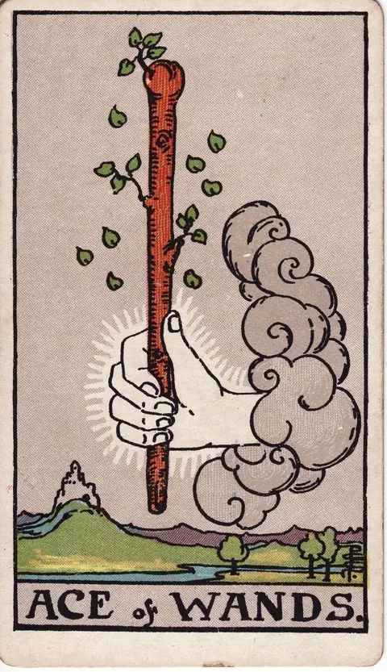

완드 · 타로 카드 백과사전
완드 에이스

그림: Pamela Colman Smith · RWS 덱 · Wikimedia Commons 원본·이용 조건
편집: 가만점방 · 해설 보완: 2026년 9월 30일
그림에서 읽는 상징
구름에서 나온 손이 잎이 돋은 막대기를 쥐고 있고 멀리 성이 보입니다.
가만점방의 해석
완드는 행동의 열의를 떠올리게 합니다. 새싹은 이미 완성된 성과보다 막 생긴 의욕을 작은 시도로 키우는 출발로 읽습니다.
역방향에서 돌아볼 점
흥미가 없는 것인지 시작할 여유가 없는 것인지 구분합니다. 큰 결심보다 시도할 조건을 살펴봅니다.
질문에 적용하는 예시
“떠오른 아이디어를 오늘 어떻게 시험할까?”
아이디어의 핵심을 한 문장으로 쓰고 20분 안에 만들 수 있는 초안을 정하세요. 반응을 본 뒤 다음 분량을 결정합니다.
예시는 가만점방이 구성한 가상 상황입니다. 실제 상담 사례나 효과를 입증한 사례가 아닙니다.
해설 기준과 참고 자료
그림 설명은 라이더–웨이트–스미스 덱의 도상을 관찰한 내용입니다. 이어지는 해석·역방향 질문·실천 예시는 가만점방의 자기성찰용 설명이며, 원전의 예언 문구를 번역한 것이 아닙니다. 덱과 해석 전통에 따라 의미는 달라질 수 있습니다.
전통적 도상 설명 참고: A. E. Waite, The Pictorial Key to the Tarot. 가만점방의 편집 원칙 · 질문 만드는 법
아래 상황별 문장은 상징을 일상에 연결하는 오락용 해석입니다. 실제 사건·건강 상태·투자 성과를 예측하지 않습니다.
정방향
키워드: 열정 · 영감 · 시작의 에너지 · 반짝이는 발상 · 가슴 뛰는 도전 · 불씨 같은 욕구
조언: 영감이 떠올랐다면 재지 말고 지금 바로 첫발을 내딛어보세요.
연애운
솔로
설렘 가득한 새로운 만남이나 연애의 시작이 다가올 수 있는 시기입니다. 마음이 끌리는 사람이 있다면 먼저 다가가 보는 용기가 좋은 결과로 이어질 수 있어요.
커플
관계에 새로운 열정을 불어넣을 좋은 계기가 생기는 시기입니다. 함께 새로운 취미나 활동을 시작해보면 관계에 활력이 더해집니다.
재물운
소비
새로운 물건이나 경험에 지출하고 싶은 의욕이 생기는 시기입니다. 다만 계획한 예산 안에서 즐기는 것이 좋습니다.
투자
자기성찰 키워드: 열정 · 영감 · 시작의 에너지. 이 리딩은 수익·손실이나 매매 시점을 예측하지 않습니다. 기대와 확인된 사실을 나누고, 비용·계약 조건·감당할 수 있는 손실을 실제 자료로 검토하세요. 카드의 방향이나 키워드를 투자 결정의 근거로 사용하지 마세요.
수입
새로운 프로젝트에서 예상보다 빠르게 수입이 생기는 시기입니다. 타오르는 열정을 살려 적극적으로 기회를 잡아보세요.
취업운
구직
새로운 분야에 도전하고 싶은 의욕이 샘솟는 시기입니다. 지금의 열정을 살려 지원서를 준비해보면 좋은 결과가 있을 수 있어요.
이직
새로운 역할이나 프로젝트에 대한 의욕이 커지는 시기입니다. 변화를 두려워하지 말고 기회를 잡아보세요.
직장운
팀워크
새로운 프로젝트에 대한 팀 전체의 의욕이 샘솟는 시기입니다. 그 열기를 살려 협업을 주도해보세요.
개인성과
새로운 역할에 대한 개인적인 의욕이 커지는 시기입니다. 열정을 살려 적극적으로 나서보세요.
사업운
창업준비
새로운 사업 아이디어가 떠오르는 시작의 설렘이 큰 시기입니다. 아이디어를 구체적인 계획으로 옮겨보세요.
운영중
기존 사업에 새로운 활력을 더할 아이디어가 떠오르는 시기입니다. 열정을 살려 새로운 시도를 해보는 것이 좋습니다.
학업운
시험준비
새로운 학습 방법에 대한 흥미가 생기는 시기입니다. 그 흥미를 살려 시험 준비에 활력을 더해보세요.
진로고민
새로운 분야에 대한 흥미가 진로 탐색의 좋은 실마리가 되는 시기입니다. 관심이 가는 방향을 적극적으로 알아보세요.
건강운
신체
자기성찰 키워드: 열정 · 영감 · 시작의 에너지. 이 리딩은 건강 상태나 질환의 발생·회복을 예측하지 않습니다. 최근의 생활 기록에서 무리했던 부분과 쉬어갈 시간을 살펴보세요. 증상이나 치료 여부는 카드가 아니라 의료 전문가를 통해 확인하세요.
정신
자기성찰 키워드: 열정 · 영감 · 시작의 에너지. 이 리딩은 건강 상태나 질환의 발생·회복을 예측하지 않습니다. 지금의 감정을 내 말로 표현할 수 있는지, 부담을 나눌 사람이 있는지 돌아보세요. 불편이 지속되면 적절한 전문 도움을 구하세요.
대인관계운
새로운 인연
새로운 인연에 대한 설렘과 열정이 샘솟는 시기입니다. 적극적으로 다가가면 좋은 인연으로 이어질 수 있어요.
기존 관계
기존 관계에 새로운 활력을 더하고 싶은 마음이 커지는 시기입니다. 함께 새로운 경험을 해보세요.
명예운
새로운 시도로 주목받을 수 있는 시기입니다. 열정적인 태도가 좋은 인상으로 이어질 수 있어요.
이사운
새로운 곳으로 이동하고 싶은 열망이 샘솟는 시기입니다. 그 열정을 살려 구체적인 계획을 세워보세요.
자식운
아이와 새로운 것을 시작하기 좋은 활기찬 시기입니다. 아이의 호기심을 자극할 새로운 활동을 함께 해보세요.
역방향
키워드: 지연 · 동기 부족 · 방향 상실 · 미루는 버릇 · 손 놓은 계획 · 흐릿한 실마리
조언: 무엇이 시작을 가로막고 있는지부터 솔직하게 점검해보세요.
연애운
솔로
마음은 있지만 선뜻 다가가지 못하고 망설이고 있는 시기입니다. 완벽한 타이밍을 기다리기보다 작은 용기부터 내보세요.
커플
관계를 발전시키고 싶은 마음은 있지만 계기를 못 찾아 제자리걸음일 수 있습니다. 먼저 작은 변화를 시도해보는 것이 좋습니다.
재물운
소비
사고 싶은 마음은 있지만 선뜻 지출을 결정하지 못하고 미루고 있을 수 있습니다.
투자
자기성찰 키워드: 지연 · 동기 부족 · 방향 상실. 이 리딩은 수익·손실이나 매매 시점을 예측하지 않습니다. 기대와 확인된 사실을 나누고, 비용·계약 조건·감당할 수 있는 손실을 실제 자료로 검토하세요. 카드의 방향이나 키워드를 투자 결정의 근거로 사용하지 마세요.
수입
의욕만 앞선 일이 실제 수입으로 이어지지 못할 수 있는 시기입니다. 의욕을 잠시 가라앉히고 실질적인 수익 구조부터 점검해보세요.
취업운
구직
의욕은 있지만 어디서부터 시작해야 할지 갈피를 못 잡고 있을 수 있습니다. 작은 것부터 하나씩 실행에 옮겨보세요.
이직
이직하고 싶은 마음은 있지만 계기를 못 찾아 망설이고 있는 시기입니다.
직장운
팀워크
팀의 의욕은 있지만 시작할 계기를 못 찾고 있을 수 있는 시기입니다.
개인성과
의욕은 있지만 정작 실행으로 옮기지 못하고 있는 시기입니다. 작은 것부터 시작해보세요.
사업운
창업준비
좋은 아이디어가 있어도 실행으로 옮기지 못하고 있는 시기입니다. 완벽한 준비를 기다리기보다 작게 시작해보세요.
운영중
새로운 시도에 대한 의욕은 있지만 실행이 자꾸 미뤄지고 있을 수 있습니다.
학업운
시험준비
공부를 시작하려는 마음이 자꾸 미뤄지고 있는 시기입니다. 작은 목표부터 세워 실천해보세요.
진로고민
새로운 진로에 대한 관심은 있지만 실행으로 옮기지 못하고 있을 수 있습니다.
건강운
신체
자기성찰 키워드: 지연 · 동기 부족 · 방향 상실. 이 리딩은 건강 상태나 질환의 발생·회복을 예측하지 않습니다. 최근의 생활 기록에서 무리했던 부분과 쉬어갈 시간을 살펴보세요. 증상이나 치료 여부는 카드가 아니라 의료 전문가를 통해 확인하세요.
정신
자기성찰 키워드: 지연 · 동기 부족 · 방향 상실. 이 리딩은 건강 상태나 질환의 발생·회복을 예측하지 않습니다. 지금의 감정을 내 말로 표현할 수 있는지, 부담을 나눌 사람이 있는지 돌아보세요. 불편이 지속되면 적절한 전문 도움을 구하세요.
대인관계운
새로운 인연
다가가고 싶은 마음이 있지만 망설이고 있는 시기입니다. 작은 용기가 관계의 시작이 될 수 있어요.
기존 관계
관계에 변화를 주고 싶지만 계기를 못 찾아 제자리걸음일 수 있습니다.
명예운
성급한 시작이 평판에 영향을 줄 수 있는 시기입니다. 열정만 앞세우기보다 신중함도 함께 갖추세요.
이사운
이동에 대한 의욕만 있고 실행이 안 되고 있는 시기입니다. 첫 단계부터 하나씩 밟아나가 보세요.
자식운
계획 없이 시작한 일이 아이에게 혼란을 줄 수 있는 시기입니다. 시작하기 전에 아이와 충분히 이야기를 나눠보세요.
같은 슈트: 완드 에이스 · 완드 2 · 완드 3 · 완드 4 · 완드 5 · 완드 6 · 완드 7 · 완드 8 · 완드 9 · 완드 10 · 완드 시종 · 완드 기사 · 완드 퀸 · 완드 킹
홈에서 직접 카드 뽑아보기 ↗
운세는 가볍게, 선택은 당신답게.
오락 목적의 콘텐츠이며 전문적인 법률·의료·재정·심리 상담을 대체하지 않습니다.